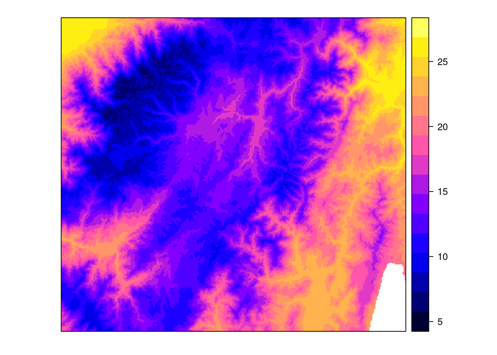

library(sf)
library(tidyverse)
library(tmap)
library(raster)
library(stars)
library(gstat)
library(spgwr)
library(dismo)
library(fields)
library(automap)Unidad 4: Interpolación espacial y Geoestadística
- Interpolación basada en métodos determinísticos
- Vecino más cercano (Voronoi)
- Inverse distance weighting (IDW)
- Predicción:
- Covariables
- Modelos regresivos
- Regresión lineal con desface espacial
- Regresión ponderada geográficamente
- Métodos geoestadísticos
- Kriging
Paquetes utilizados en esta lección
Actividad 1: Interpolación basada en métodos determinísticos
Estos ejercicios se realizaron junto con Pablo Tenelanda Y Damián Tuba.
Cargue las capas Temperatura_2.tif y recórtela hasta 200 metros más que la extensión de la capa muestreo.gpkg:: Puntos de muestreo. Y a partir de esos datos genere:
puntos <- st_read("data/gpkg/muestreo.gpkg", "Puntos de muestreo", quiet = TRUE)
puntos <- puntos |>
mutate(x = st_coordinates(puntos)[, "X"], y = st_coordinates(puntos)[, "Y"]) |>
as_Spatial()
temp2 <- raster("data/tif/Temperatura_2.tif")Creamos el buffer de al rededor de los puntos:
mascara <- st_bbox(puntos) |>
st_as_sfc(crs = st_crs(puntos)) |> #convertir el bbox a polígono
st_buffer(200) |> # Crear un buffer de 200 m alrededor del bbox
as_Spatial() Recortamos la capa de temperatura con los límites de los puntos de muestreo:
template <- temp2 %>%
crop(mascara) %>%
as("SpatialPixelsDataFrame")Revisamos el resultado
template |> plot()
puntos |> plot(add = T)- Modelo de tendencia espacial de los datos mediante un polinomio de segundo orden (modelo cuadrático). Puede usar la fórmula: variable ~ x + y + I(x*y) + I(x^2) + I(y^2)
spatial_model <- krige(
ta_media ~ x + y + I(x*y)+ I(x^2)+I(y^2), puntos, template
)[ordinary or weighted least squares prediction]spplot(spatial_model ,"var1.pred",
main= "Tendencia (2do orden)")- Diagrama de Voronoi.
A continuación se presenta los diagramas de voronoi con el paquete dismo y con una interpolación de kriging simple.
dismo::voronoi(coordinates(puntos)) %>%
plot(main = "Polígonos de Voronoi")Loading required namespace: deldirkrige(ta_media ~ 1, puntos, template, nmax=1, set=list(idp = 0), debug.level = 0) |>
spplot("var1.pred", main= "1 vecino próximo")
- Interpolación ponderada por el inverso de la distancia
idw(
ta_media ~ 1, puntos, template, nmax = 5, idp = 2, debug.level = 0
) |> spplot("var1.pred", main= "Inverse Distance Weighting")- Interpolación Thin Plate
Con la función Tps y las coordenadas de la capa puntos como la matriz de variable independientes se crea el modelo, que luego es ingresado junto al raster template en la función interpolate.
tps_model <- fields::Tps(coordinates(puntos), puntos$ta_media)
tps_grid <- interpolate(raster(template), tps_model)
spplot(tps_grid, main = "Thin plate spline")Actividad 2: Predicción Modelos regresivos
Cargue las capas modis_perc_bosque_2010_clip.tif y dem200s.tif. Recórtelas tal como lo hizo con la capa de temperatura.
Ajuste un modelo de regresión geográficamente ponderada (GWR) con las variables “ta_media” como dependiente y “Altitud” + “Forest_P_2010” como independientes
Describa el resultado.
Genere las capas de valores beta.
Mediante álgebra de mapas genere la predicción para la variable de temperatura, usando las capas beta y las variables independientes .
Actividad 3. Predicción Geoestadística
- A partir de los mismos datos de muestreo genere el semivariograma experimental.
v <- variogram(ta_media ~ 1, locations = puntos)
plot(v)- Ajuste un modelo teórico que más considere pertinente al semivariograma, y justifique por qué utilizó ese Modelo teórico.
Para ajustar el modelo vamos a revisar los disponibles
gstat::show.vgms()Entre los que mejor se ajustan al semivariograma experimental están “Sph”, “Cir” y “Pen”
plot(v, model = fit.variogram(v, model = vgm(model = "Sph")))
plot(v, model = fit.variogram(v, model = vgm(model = "Cir")))
plot(v, model = fit.variogram(v, model = vgm(model = "Pen")))El mejor modelo de variograma que se ajusta, tanto para distancias cortas como para distancias largas, es el modelo “Pen”
fit.v <- fit.variogram(v, model = vgm(model = "Pen"))
plot(v, model = fit.v)
- Genere los resultados de predicción con los tres tipos de Krigin (Va a necesitar ajustar un semivariograma adicional)
Kriging simple
simple_krige <- krige(ta_media ~ 1, puntos, template, model = fit.v,
beta = mean(puntos$ta_media))[using simple kriging]Kriging Ordinario
ordinary_krige <- krige(ta_media ~ 1, locations = puntos, newdata = template,
model = fit.v)[using ordinary kriging]Kriging Universal
universal_krige <- krige(ta_media ~ x + y, puntos, template,
model = automap::autofitVariogram(ta_media ~ x + y, puntos)$var_model,
block = c(100, 100))[using universal kriging]spplot(simple_krige, "var1.pred", main = "Simple")
spplot(ordinary_krige, "var1.pred", main = "Ordinario")
spplot(universal_krige, "var1.pred", main = "Universal")